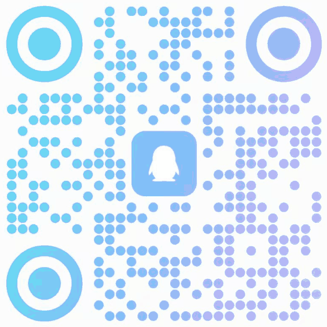

官方 API，零封号
只封装 QQ 开放平台官方 Bot API（AppID + AppSecret）。没有协议逆向，不碰账号密码，也没有“模拟登录”这类风险操作。
official bot api
QQ 开放平台官方 Bot API · 不碰协议逆向
Qmin（简 Q）是一个极简的 QQ 官方机器人框架。
一条命令启动，一个装饰器写插件，面板想看再看。
不构建前端也能先把机器人跑起来。
↑ v0.1.0 / MIT · 三条命令，从零到回话
不发明新概念，只把新手最容易被卡住的地方拿掉。
只封装 QQ 开放平台官方 Bot API（AppID + AppSecret）。没有协议逆向，不碰账号密码，也没有“模拟登录”这类风险操作。
official bot api
一个异步函数 + 一个 @on_group_at 就是插件。面板里粘贴安装即刻生效；改完文件点一下「重新加载」，不用重启。
one decorator
没有构建前端也能跑机器人。想要可视化时再构建一次：仪表盘、日志、插件安装与开关、配置修改都在同一个页面里。
panel optional
日志落进 SQLite，重启不丢；按级别、来源、关键词筛选，插件加载失败会带上行号与原因，而不是“没反应”。
logs persisted
插件就是 plugins/ 下的一个 .py 文件，文件名即插件名。
1"""群里 @ 机器人并说“你好”时回复。"""
2
3from core.handlers import on_group_at
4
5__plugin_name__ = "打招呼"
6__description__ = "收到包含“你好”的群消息时回复"
7
8@on_group_at("你好")
9async def hello(event) -> None:
10 await event.reply("你好呀")_ 开头的文件会被跳过，用来放模板。event 上能拿到群 openid、正文、发送者、消息 id，以及 await event.reply("文本")。Python 3.11+。不需要 Node，不需要构建前端。
git clone https://github.com/qqmin52/qmin.git
cd qmin
python -m venv .venvpip install -e .
qmin init按提示填 AppID / AppSecret，其余直接回车。管理令牌会自动生成，之后用 qmin token 复制。
qmin doctor
qmin start有配置会自动连机器人，没配置会进配置向导。群里 @ 一下，就该回话了。
构建一次前端，得到一个只监听本机的管理界面。
note
管理接口默认只绑 127.0.0.1，写操作要求管理令牌与同源 Origin。面板是单机工具，不是公网后台。
写插件、改框架、提 PR，都有据可查。
机器人不受影响：qmin start 照常连接、收发消息。面板地址会返回一段 JSON 提示，告诉你构建命令。配置可以用 qmin init 在命令行里完成。
Qmin 只调用 QQ 开放平台官方 Bot API，不涉及协议逆向或模拟登录。机器人需要在开放平台创建、审核，并按平台规则使用。
目前只封装了群 @ 文本消息。按钮 / 卡片（keyboard、ark）、私聊、频道消息还没有对应装饰器，需要直接调用 qq-botpy SDK。
一个 qmin start 管理一个 AppID 的连接。需要多个就起多个实例、用不同的 .env 与端口。
